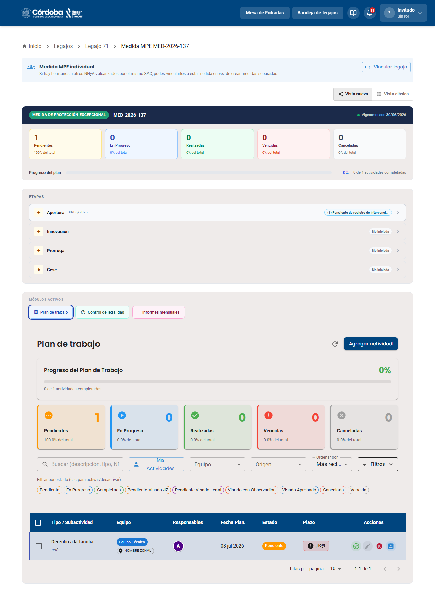
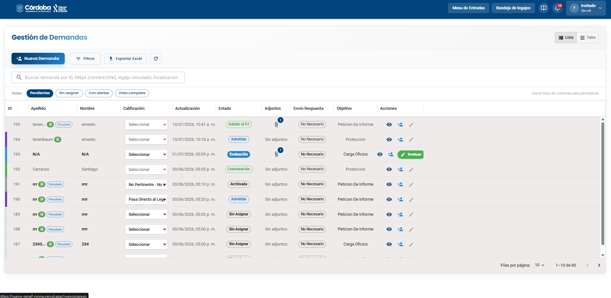
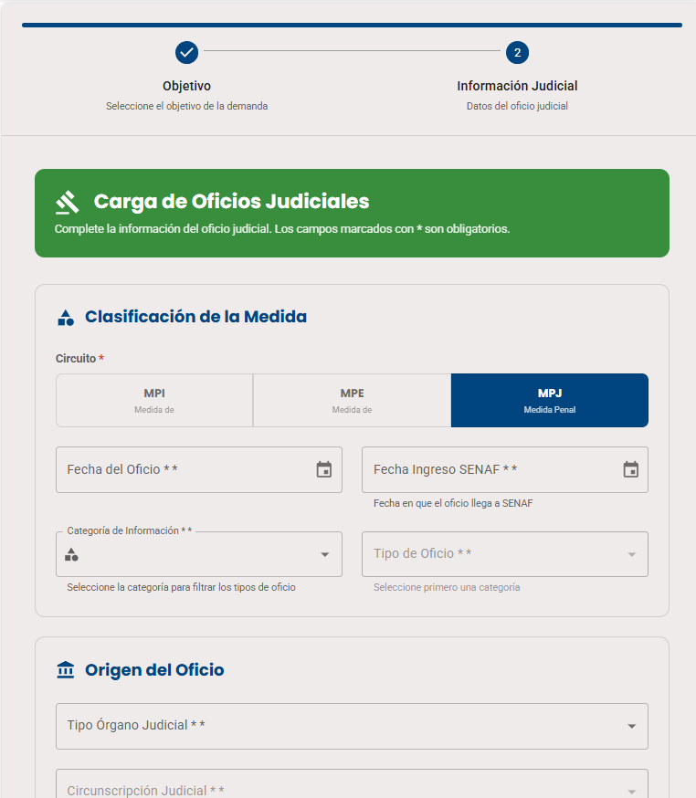

El cese de una MPJ ocurre únicamente cuando el Poder Judicial emite un oficio de cese. No hay formulario técnico ni circuito de aprobaciones internas. Solo cuando el oficio es recibido y visado por Legales, la medida se cierra automáticamente.



Simulá la recepción de un oficio de cese del Poder Judicial para una MPJ y el registro en el sistema.